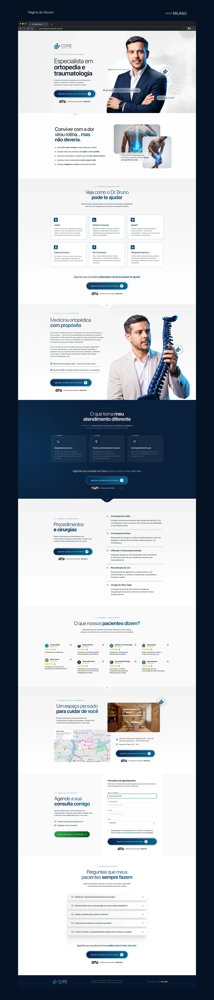
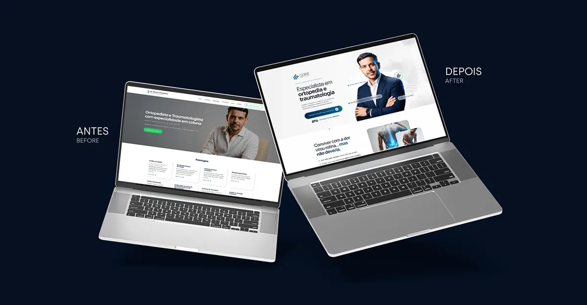

La référence de départ : « Landing Page | Dr. Bruno Monteiro | Ortopedista », par Milano Assessoria, sur Behance ↗. Le template est refait de zéro à partir de cette image : textes, images et code sont les nôtres.

Avant et après
